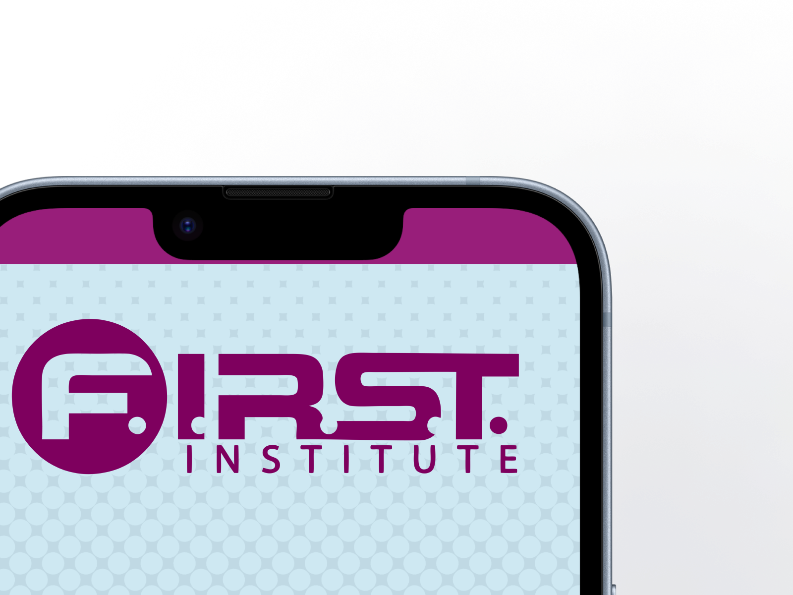

Student App
These lo-fi sketches were developed based on our research and served as a solid foundation for creating the mid-level wireframes. The insights gained during the research phase were instrumental in shaping the design direction and ensuring that the wireframes align with user needs and goals. View case study
